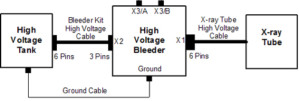

Operating Documentation
Direction 5193574-800, Rev# 22
LightSpeed 7.X Service Methods
Module Version 3.0, Version Date 11/19/10
Operating Documentation |
| Last Revision | November 19, 2010 |
The following conditions are required to perform this procedure.
X-ray tube should be cold.
Digital Multimeter must meet the following conditions:
VDC Mode must have 10 Mohm input impedance.
Have an mA scale capability of 199.9 mA
Have a display capability of 3-1/2 digits
Have a display capability of at least 2 decimal places
Oscilloscope must be turned on and warmed up for a minimum of 20 minutes.
HV Bleeder resistor
Turn OFF all three switches on the gantry service switch panel (Axial Drive Enable, HVDC, 120 VAC).
Rotate the gantry so that the HV Tank assembly is in the 3 o'clock position.
Engage the rotational lock. Make sure the gantry is locked in place by attempting to rotate the gantry by hand.
Suspend the High Voltage Bleeder from the hoist/boom.
Free the HV cable:
Carefully cut tywraps securing the HV cable between the High Voltage Tank and the X-ray Tube. (Note the HV cable routing.)
Loosen the cable’s locking ring with a spanner wrench.
Remove the HV cable terminal switch from its receptacle on the HV tank.
Install the HV bleeder between the tank and the tube (see Illustration 1).
Illustration 1: High Voltage Bleeder Connection Block Diagram

| NOTE: | Ensure that you attach a ground cable from the bleeder
to the HVT. Incorrect bleeder setup can result in damage to the HV
subsystem. Verify that the key on the Bleeder Kit HV cable is aligned with the high voltage tank receptacle slot. |
Turn on the 120 VAC and the HVDC Enable switches on the gantry service switch panel.
Press ESTOP RESET on the gantry service switch panel and wait until the scan hardware successfully resets.
| NOTE: | It may take about 2 minutes for the gantry display to reset. No flashing lights on the gantry display indicates this is completed. |
Perform the following steps on the Oscilloscope.
Press[UTILITY].
Press [SYSTEM], [CAL].
Press [SIGNAL PATH PASS].
Press [OK COMPENSATE SIGNAL PATHS] .
| NOTE: | During compensation, the following message is displayed: Calibration in progress, please wait. Compensation can take up to 10 minutes. When completed, the following message is displayed: Signal path compensation has successfully completed. |
Press [MENU OFF].
Connect a 10X probe to the oscilloscope Channel 1 plug.
Perform Oscilloscope Probe Compensation:
Attach the probe tip and reference lead to the Probe Comp connectors.
Press [AUTOSET].
Check the shape of the displayed waveform for a flat-top square wave.
| NOTE: | If the waveform is not a flat-top square wave, adjust the probe Low Frequency compensation and repeat step 2, a - c. |
Connect the oscilloscope 10X probe Signal to the high voltage bleeder X3/A plug.
Connect the oscilloscope 10X probe Common to the high voltage bleeder X3/B plug.
| NOTE: | The menu selections are based on a TDS3034B oscilloscope and might be different on another oscilloscope. |
Set Horizontal Scale to 400 ms.
Press [CH 1].
Set Channel 1 Vertical Scale to 2V/divison
Set Channel 1 Vertical Position to 2 minor ticks (0.4 of a division) from the top of the screen.
Press [Trigger], [Menu], [Source], [CH1].
Press [Menu], [Coupling], [DC].
Press [Trigger], [Menu], [Slope], [Neg] .
Set Trigger Menu Level to -3.00 V.
Press [Trigger], [Menu], [Mode & Hold], [Normal].
Set [Horizontal Delay] to OFF state.
| NOTE: | This sets the Horizontal Trigger to 10%. |
Press [Measure], [Gating], [Between V Bar Cursors].
Press [Menu Off].
| NOTE: | The mean of the pulse is displayed on the right-hand side of the screen. |
| NOTE: | This is the oscilloscope offset value that is subtracted
from the true measurement values in later steps. Do NOT change the vertical scale on the oscilloscope after measuring the offset value. |
Press [Trigger], [Force Trig].
Make note of the oscilloscope Channel 1 mean value in volts.
On the console Service Desktop, select the Diagnostic tab.
Select kV & mA (X-ray) from the Diagnostic tab.
On the kV and mA test (X-ray functional test) pane, set the following parameter values:
X-ray Test Type = Manual
80 kV
mA = 50
Min. ISD = 3
# Exposures = 1
Exp. Time (sec) = 2
Filter Type = Air
Aperture = Closed
Focal Spot = Large
In the Gantry Params pane, set Gantry to Disabled.
Press [Run] and complete the scan.
Record the kV & mA X-ray Gen tool Cathode/Total kV Average Value on the PM Report form.
On the oscilloscope, use the [Select -Coarse] knob to place the left cursor to just inside the front edge of the waveform.
Press [Select ] and use the [Select-Coarse] knob to place the right cursor just inside the back edge of the waveform.
Make note of the Channel 1 mean value in volts, including the minus sign, if there is one.
Obtain the measured kV value by (-10 kV/V) * (Channel 1 mean value (Section 4.3, Step 9) - Offset Channel 1 mean value (Section 4.2, Step 2)).
Verify that the following conditions are met:
| NOTE: | If any of these conditions are not met, schedule time to replace the high voltage and retest. |
measure kV value is within 3% of the kV selection value.
Cathode/Total kV Average value is within 3% of the kV selection value.
Measure kV value is within 2% of the Cathode/Total kV Average value.
Record the results on the PM Report Form.
In the kV and mA Test (X-ray Functional Test) pane, set the kV Selection to 100.
Repeat Steps 5 - 12 in this section.
In the kV and mA Test (X-ray Functional Test) pane, set the kV Selection to 120.
Repeat Steps 5 - 12 in this section.
In the kV and mA Test (X-ray Functional Test) pane, set the kV Selection to 140.
Repeat Steps 5 - 12 in this section.
Configure the oscilloscope per instructions in Section 4.1.
Press [Trigger,][Menu], [Slope], and [POS].
On the kV and mA Test (X-ray Functional Test) pane, set the following parameter values:
X-ray Test Type = Manual
kV Selection = 100
mA = 40
Min. ISD = 3
# Exposures = 1
Exp. Time (sec) = 1
Filter Type = Closed
Aperture = Closed
Focal Spot = Large
In the Gantry Params pane, set Gantry to Disabled.
Press [Run] and complete the scan.
On the oscilloscope, use the [Select - Coarse] knob to place the left cursor just inside the front edge of the waveform.
Press [Select] and use the [Select - Coarse] knob to place the right cursor just inside the back edge of the waveform.
On the PM Report form, record the Measured Scan Time value (Dt) in seconds, as the time between the two cursors.
Verify that the Measured Scan Time value is within 4% of the Exposure Time selection.
Record the results on the PM Report form.
Click [Dismiss] from kV & mA X-ray Gen.
Turn OFF the HVDC Enable and 120 VAC switches on the gantry service switch panel.
Disconnect the oscilloscope from the high voltage bleeder.
Turn off, unplug, and prepare the oscilloscope for storage.
Disconnect the high voltage bleeder form the system and prepare the bleeder components for storage.
Perform Securing HV Cable.